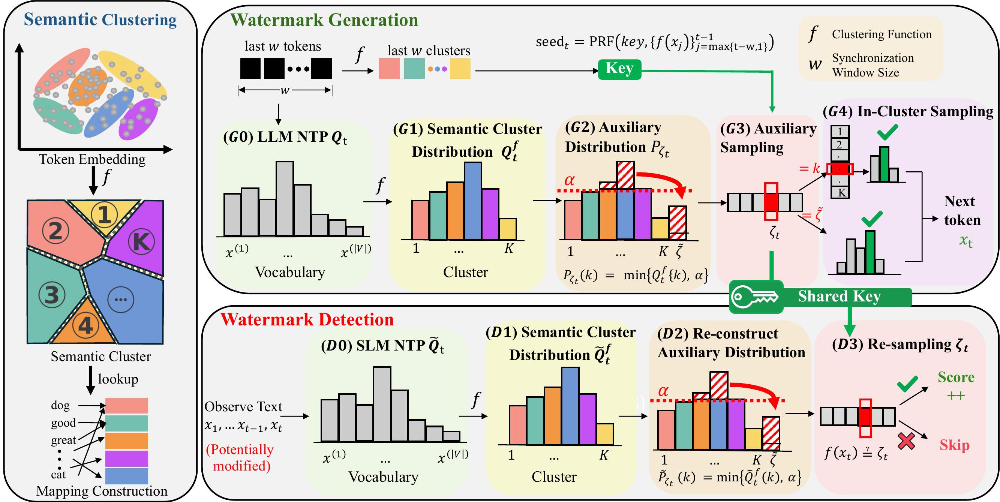

Watermarking large language models (LLMs) has emerged as a promising approach for identifying LLM-generated text and supporting responsible AI deployment. However, existing watermarking methods are often vulnerable to semantic-invariant attacks, such as paraphrasing, which can substantially weaken or remove watermark signals while preserving the original meaning.
We propose PASA, a principled, robust, and distortion-free watermarking algorithm that embeds and detects watermark signals at the semantic level. PASA operates over semantic clusters in a latent embedding space and establishes a distributional dependency between token sequences and auxiliary sequences through shared randomness synchronized by a secret key and semantic history. This design is grounded in our theoretical framework, which characterizes a jointly optimal embedding-detection pair and captures the fundamental trade-offs among detection accuracy, robustness, and distortion.
Extensive evaluations across multiple LLMs and semantic-invariant attacks demonstrate that PASA remains robust even under strong paraphrasing attacks while preserving high text quality. Compared with standard vocabulary-space watermarking baselines, PASA achieves stronger robustness and detection performance. Ablation studies further validate the effectiveness of our key design choices and hyperparameter settings.

PASA first constructs a semantic mapping function f, which partitions the latent token embedding space into K semantic clusters.
At each step t, the next-token prediction distribution Qt is transformed into the cluster distribution Qft. The auxiliary distribution Pζt is truncated by a threshold α and contains an overflow state ζ̃ to ensure false-alarm error control. Auxiliary sampling of ζt uses a seed generated by a PRF with a secret key and w semantic history as input. The sampled auxiliary random variable ζt then guides the sampling of the next token xt within the selected semantic cluster.
For a potentially modified observed token sequence, the detector approximates the generation distribution through a surrogate small language model. The detection score accumulates based on the alignment between the resampled ζt and the observed semantic cluster f(xt).
We evaluate PASA under standard detection settings and challenging semantic-invariant attacks. The results show that PASA achieves robust detection while preserving text quality and maintaining practical detection cost.
PASA provides a simple reproduction pipeline for generating watermarked text. To reproduce the main experiment, follow these steps:
Clone the PASA repository from GitHub.
git clone https://github.com/ai-kunkun/PASA.git
cd PASASetup the conda environment and install dependencies.
conda create -n pasa python=3.10 -y
conda activate pasa
pip install torch transformers accelerate datasets pandas tqdm nltk tokenizers
python -c "import nltk; nltk.download('punkt')"If you encounter any issues, please open an issue at PASA Issues, and we will assist you as soon as possible.
If you find our work helpful, please cite our paper:
@inproceedings{ai2026pasa,
title = {PASA: A Principled Embedding-Space Watermarking Approach for LLM-Generated Text under Semantic-Invariant Attacks},
author = {Ai, Zhenxin and He, Haiyun},
booktitle = {Proceedings of the International Conference on Machine Learning},
year = {2026}
}